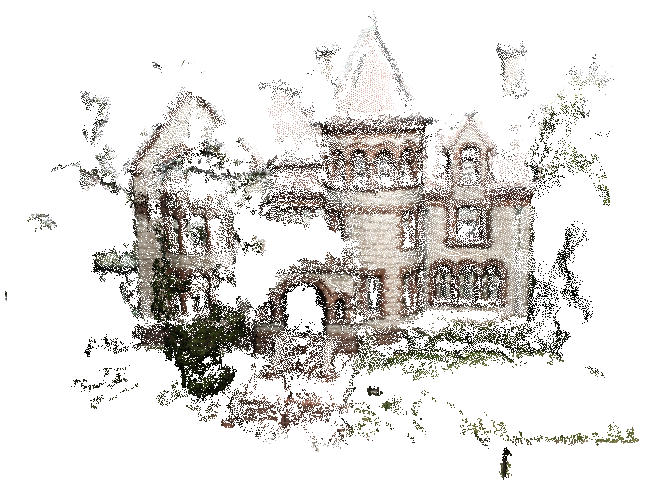
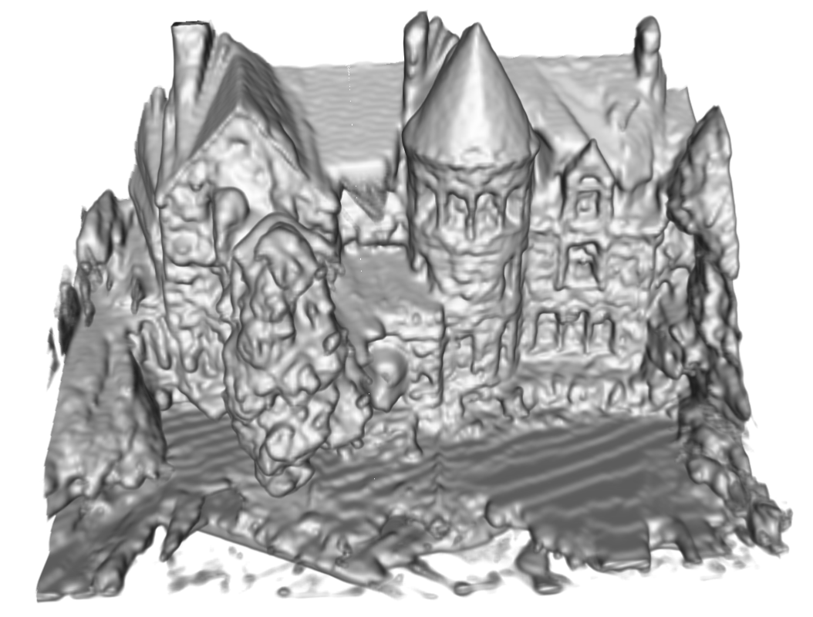

| about me | curriculum vitae | research | demos | courses |
demo 1 | demo 2
A Statistical Inverse Ray Tracing Approach to Multi-View StereoIntroduction | Datasets | Recent Results | Comparison with PMVS2 | Convergencebuilding14 | horse29 | elephants40Input ImagesThumbnail views of the 14 input images of a building, cluttered by trees and moving vehicles
PMVS2
Two different views of the point cloud generated by PMVS2. The front view of the building is reconstructed densely; the trees and grass are missing; and the top parts of the building (e.g., the roof, chimney) are missing.
Three different views of the textured and non-textured models of the surface model generated by PMVS2 + PoissonRecon. PoissonRecon does a good job of meshing the dense region of the point cloud, and filling in holes. But it cannot recover the missing region (tree, grass, roof, etc.), as expected.
IRAY (our system)
Three different views of the textured and non-textured models of the surface model generated by IRAY. It can be seen that our system generates a more complete reconstruction, including the trees, grass, roof, and three chimneys.
|
Last updated on Nov. 24, 2010